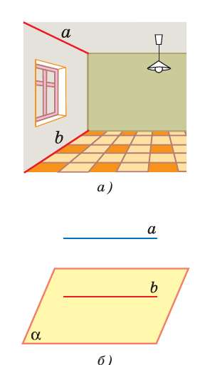
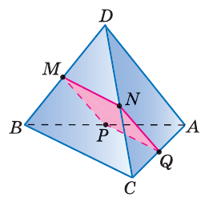

Геометрия · 10 класс
02
§ 1 · п. 4–6
Параллельность прямых и плоскостей
Когда прямые не пересекаются — и почему этого мало
Определение
Параллельные прямые
ОпределениеДве прямые в пространстве называются параллельными, если они лежат в одной плоскости и не пересекаются.
В пространстве «не пересекаются» ≠ «параллельны».
Геометрия · 10 классУрок 2 · Параллельность прямых, прямой и плоскости
Теорема
О параллельных прямых
ТеоремаЧерез любую точку пространства, не лежащую на данной прямой, проходит прямая, параллельная данной, и притом только одна.
Идея: перейти в плоскость прямой и точки — там работает планиметрия.
Геометрия · 10 классУрок 2 · Параллельность прямых, прямой и плоскости
Часть 1
Лемма и три прямые
Лемма
Параллельные прямые и плоскость
ЛеммаЕсли одна из двух параллельных прямых пересекает плоскость, то и другая пересекает эту плоскость.
Параллельные прямые ведут себя одинаково: обе пересекают плоскость — или обе нет.
Геометрия · 10 классУрок 2 · Параллельность прямых, прямой и плоскости
Теорема
О трёх прямых
ТеоремаЕсли две прямые параллельны третьей, то они параллельны.
a ∥ c, b ∥ c ⟹ a ∥ b
a ∥ c, b ∥ c ⟹ a ∥ b
Доказываем две вещи: лежат в одной плоскости и не пересекаются.
Геометрия · 10 классУрок 2 · Параллельность прямых, прямой и плоскости
Часть 2
Прямая и плоскость
Три случая
Прямая и плоскость

а) прямая лежит в плоскости

б) одна общая точка

в) нет общих точек
Геометрия · 10 классУрок 2 · Параллельность прямых, прямой и плоскости
Признак
Параллельность прямой и плоскости
ПризнакЕсли прямая, не лежащая в плоскости, параллельна какой-нибудь прямой этой плоскости, то она параллельна плоскости.
a ∥ b, b ⊂ α ⟹ a ∥ α
Геометрия · 10 классУрок 2 · Параллельность прямых, прямой и плоскости
Свойства
Два важных свойства
Свойство 1°Плоскость проходит через прямую a ∥ α и пересекает α ⟹ линия пересечения ∥ a.
Свойство 2°Одна из параллельных прямых ∥ плоскости ⟹ вторая тоже параллельна ей или лежит в ней.
Геометрия · 10 классУрок 2 · Параллельность прямых, прямой и плоскости
Разбираем
Пример
- M, N, Q, P — середины DB, DC, AC, AB; AD = 12, BC = 14. Найти периметр MNQP.
- MN и PQ — средние линии с основанием BC: по 7 см.
- MP и NQ — средние линии с основанием AD: по 6 см.
- Периметр = 7 + 6 + 7 + 6 = 26 см.

Рис. 17
Геометрия · 10 классУрок 2 · Параллельность прямых, прямой и плоскости
Главный приём
Середины → средняя линия
Видишь середины двух сторон треугольника — проводи среднюю линию. Она параллельна третьей стороне и равна её половине.
Это главный источник параллельных прямых в задачах про середины.
Геометрия · 10 классУрок 2 · Параллельность прямых, прямой и плоскости
Практика
Задачи урока · 1/3
№ 1
Дан куб ABCDA₁B₁C₁D₁. Сколько рёбер куба параллельны ребру AB? Назови их.
№ 2
Верно ли, что: а) если две прямые в пространстве не пересекаются, то они параллельны; б) если прямая параллельна плоскости, то в этой плоскости есть прямая, параллельная данной; в) две прямые, параллельные третьей, параллельны между собой; г) две прямые, параллельные одной плоскости, параллельны между собой?
№ 3
M и N — середины рёбер AA₁ и CC₁ куба ABCDA₁B₁C₁D₁. Какие из плоскостей ABCD, A₁B₁C₁D₁, ACC₁, AA₁B₁ параллельны прямой MN?
Геометрия · 10 классУрок 2 · Параллельность прямых, прямой и плоскости
Практика
Задачи урока · 2/3
№ 4
Точки K и L лежат на рёбрах DA и DB тетраэдра DABC, причём DK : KA = DL : LB = 2 : 3; AB = 20. Докажи, что прямая KL параллельна плоскости ABC, и найди KL.
№ 5
Параллелограмм ABCD не пересекает плоскость α. Через его вершины проведены параллельные прямые, пересекающие α в точках A₁, B₁, C₁, D₁; AA₁ = 3, BB₁ = 5, CC₁ = 9. Найди DD₁.
№ 6
Отрезок AB пересекает плоскость α в точке O. Через точки A и B проведены параллельные прямые, пересекающие α в точках A₁ и B₁; AA₁ = 6, BB₁ = 10, A₁B₁ = 16. Найди A₁O.
Геометрия · 10 классУрок 2 · Параллельность прямых, прямой и плоскости
Практика
Задачи урока · 3/3
№ 7
Сколько различных плоскостей проходит через какие-нибудь три вершины куба ABCDA₁B₁C₁D₁?
№ 8
Прямая a параллельна плоскости α. Через точку A плоскости α проведена прямая b, параллельная a. Докажите, что прямая b лежит в плоскости α.
Геометрия · 10 классУрок 2 · Параллельность прямых, прямой и плоскости
Дома
Домашнее задание · 1/4
Д1
Точки K, L, M, N — середины рёбер DA, DC, BC и AB тетраэдра DABC; AC = 18, BD = 14. Докажи, что KLMN — параллелограмм, и найди его периметр.
Д2
Отрезок AB не пересекает плоскость α. Через точки A, B и середину M отрезка AB проведены параллельные прямые, пересекающие α в точках A₁, B₁ и M₁. AA₁ = 7, BB₁ = 13. Найди MM₁.
Геометрия · 10 классУрок 2 · Параллельность прямых, прямой и плоскости
Дома
Домашнее задание · 2/4
Д3
Точка S не лежит в плоскости трапеции ABCD с основаниями AD и BC. Какие из прямых AB, AD, CD, SA параллельны плоскости SBC? Обоснуй ответ для каждой прямой.
Д4
Плоскость α параллельна стороне AC треугольника ABC и пересекает стороны AB и BC в точках M и N. AM = 4, MB = 6, AC = 15. Найди MN.
Геометрия · 10 классУрок 2 · Параллельность прямых, прямой и плоскости
Дома
Домашнее задание · 3/4
Д5
Точки A и B лежат по разные стороны от плоскости α. Через A и B проведены параллельные прямые, пересекающие α в точках A₁ и B₁; AA₁ = 6, BB₁ = 14. Через середину M отрезка AB проведена прямая, параллельная AA₁ и пересекающая α в точке M₁. Найди MM₁.
Геометрия · 10 классУрок 2 · Параллельность прямых, прямой и плоскости
Дома
Домашнее задание · 4/4
Д6
Прямая A₁B₁ куба ABCDA₁B₁C₁D₁ параллельна плоскости ABC. Сколько из прямых AB, BC, CD, DA, AC, BD (все они лежат в плоскости ABC) параллельны прямой A₁B₁? Какой вывод отсюда следует?
Геометрия · 10 классУрок 2 · Параллельность прямых, прямой и плоскости